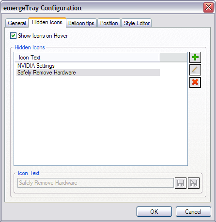
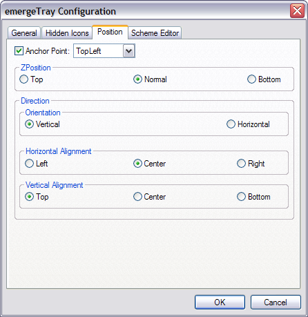
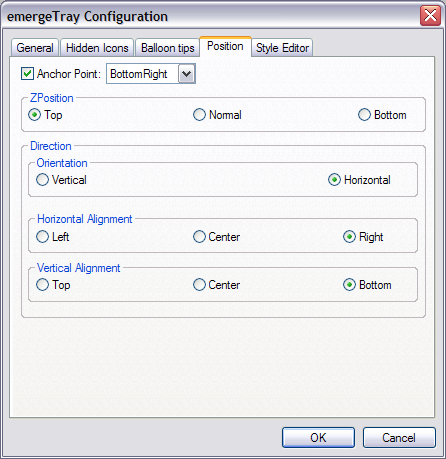

| About |
emergeTray is the 'system tray' applet of Emerge Desktop. It displays the system icons in a movable, resizeable window.
| Configuration |
emergeTray is configured by pressing the Ctrl key and right-clicking on the tray window. This opens the configuration menu:
About displays the module's author and version and the current style's path and filename.
Load Style allows the user to browse and select a Style File.
Reload Current Style allows to reload the current style after editing.
Configure displays the emergeLauncher configuration dialog box.
Exit closes the module. It can be restarted by highlighting it and clicking on the Start  button in the Launch Applet dialog box (see emergeCore).
button in the Launch Applet dialog box (see emergeCore).
After selecting Configure, the configuration dialog box opens. The first tab is General:

SnapMove makes the window snap to the edges of other applets' windows or the edges of the screen when moving it.
SnapSize makes the window snap to the edges of other applets' windows or the edges of the screen when changing its size.
AutoSize keeps the window to a minimum size around the icons. Its size can no longer be changed by dragging an edge while pressing the Alt key.
Click Through allows clicking "through" the window (i.e. allows clicking on whatever is behind it). It has two modes: Full (the whole window is "transparent" to mouse input), or Background (only the background area is "transparent" but the user can click on the icons in emergeTray, emergeTasks, emergeLauncher, the text in emergeCommand, emergePower, the active mini-window in emergeVWM, the graphs in emergeSysMon).
Important notes: 1) Full Click Through works for any level of opacity, from opaque to fully transparent; 2) Background Click Through automatically sets the background to transparent but does not change the style, this is a known limitation; 3) To manipulate an applet set on Full Click Through, the user must press the Shift key: Shift+Ctrl+LeftClick to move the applet, Shift+Ctrl+RightClick to get the configuration menu and Shift+Alt to resize the applet.
Icon Spacing defines the spacing in pixels between adjacent icons.
The configuration dialog box's second tab is Hidden Icons:

Show Icons on Hover shows the hidden icons when the cursor is over the tray.
The Hidden Icons window displays the list of hidden icons as selected by the user.
To Add  a new hidden icon, the user must type the text (or part of the text) showed in that icon's tooltip (i.e. the text in the yellow box which appears when the cursor is over the icon).
a new hidden icon, the user must type the text (or part of the text) showed in that icon's tooltip (i.e. the text in the yellow box which appears when the cursor is over the icon).
The user then clicks on Save  (or Discard
(or Discard  to start over). Pressing the OK button saves the current settings and closes the configuration dialog box.
to start over). Pressing the OK button saves the current settings and closes the configuration dialog box.
An item displayed in the Hidden Icons window can be Deleted  after highlighting it in the list.
after highlighting it in the list.
After the user adds, deletes or modifies incorrectly an item, she can undo changes by clicking the Cancel button. A dialog box will open asking for confirmation to close the configuration dialog box without saving the changes made.
Important Note: Items can be added to the Hidden Icons list without opening the emergeTray configuration dialog box by pressing the Alt key and left-clicking on the item to be hidden.
The configuration dialog box's third tab is Balloon Tips:

The balloon tips (notifications which appear automatically next to tray icons for a few seconds when, for example, an action has been completed) can be customized:
Title and Message Fonts bring up the font dialog box, which allows to select Font, Font style and Size:

Gradient Settings:
Method: Defines the direction or geometry of the gradient. Options are: Solid (no gradient, color is From Color), Vertical (from top to bottom), Horizontal (from left to right), CrossDiagonal (from top right corner to bottom left corner), Diagonal (from top left corner to bottom right corner), Pipecross (from corners to center drawing a 3D pipe cross), Elliptic (from border to center), Rectangle (from edges to center drawing the diagonals), Pyramid (from corners to center drawing a cross). Default is Vertical.
From Color: defines the starting color for the Gradient. Default is white.
To Color: Defines the ending color for the Gradient. Default is yellow.
Opacity of the balloon tips can be set from 100 (opaque) to 0 (transparent). Default is 100.
Text Color defines the color of the font, Border Color defines the color of the border of the balloon. Default for both is black.
The configuration dialog box's fourth tab is Position:

Anchor Point gives the choice of anchoring the window to the monitor's Top Left, Top Center, Top Right, Middle Left, Middle Center, Middle Right, Bottom Left, Bottom Center, or Bottom Right.
ZPosition defines the relative position of the window in the Z axis (i.e. from the screen to the user) and can be set to always on the Top, Normal (behaves as a regular program window), or always at the Bottom.
Orientation defines if the icons are set as a column (Vertical) or as a row (Horizontal).
Independently of the the Orientation, the icons can have three options for Horizontal or Vertical Alignment:
Horizontal Aligment can be set to: align on the Left of the applet (i.e. new items are added to the right), Center (i.e. expand in both directions in relation to the horizontal center), or on the Right.
Vertical Aligment can be set to: Top of the applet, vertical Center, or Bottom.
If Autosize is not selected, when icons reach an edge, they will add a new row or column to the window, depending on Vertical or Horizontal Orientation.
For the configuration dialog box's fourth tab, see the Style Editor.
| Usage |
Clicking on a tray icon will perform the action defined by the icon for that specific click. For example, left-clicking on the Volume icon will bring up the volume slider. Double left-clicking on the Volume icon displays the sound control window. Right-clicking on the Volume icon displays a menu.
To move the window, the user must press the Ctrl key, left-click on the window, and drag it to another location.
To resize the window (provided that Autosize is not selected), the user must press the Alt key, left-click on one edge of the window, and drag it to a new size.
The window position and size are stored in the applet's xml file, which is located in the User Profile folder under "\Application Data\Emerge Desktop\themes", in a subfolder with the same name as the current Theme. See Theme Manager for more details.